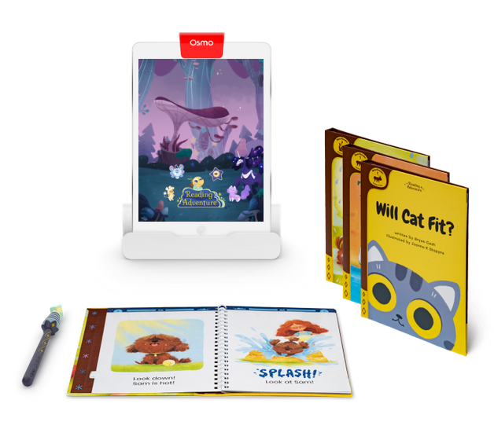

Creative Technology Portfolio
My name is Patrick Stefaniak and I have been making interactive installations and videogames in both commercial and artistic contexts since 2013.

My most recent project was DREYDL: ZOL ZAYN MIT MAZEL, a dreydl slot machine made in collaboration with Forest Reid, presented at the San Francisco Institute for Contemporary Art. It is a slot machine game developed in Unity that combines the rules of the dreydl top game, where 4 players take turns spinning and winning or losing coins, with the game mechanics of a slot machine, including surprise bonus rounds and a ticket print-out. An additional layer to the game is storytelling done as voice-overs, as if you are playing a game with friends or family and talking, which pull from Yiddish plays.
I worked on this project as a game designer, Unity devloper, 3D artist, and animator.
In 2022-23 I worked with Amy Mihyang Ginther, Susana Ruiz, and Huy Truong on developing a VR experience, Mountains After Mountains, based on a monologue of Ginther's that was filmed using volumetric video. My role was both to help conceptualize building out a digital world around the monologue and to build it out and program it in Unity, along with 3D art and animations. This was presented at the AHL Foundation in New York, New York in 2023 and will soon be released on the Oculus store.



Also in 2023, I worked for Osmo as a Technical Artist for their Reading Adventure game for the iPad and Android tablets, where I worked on editing special effects, animation timelines, and computer vision tagging in Unity.

While doing my MFA in Digital Arts + New Media at UC Santa Cruz I created several installations combining videogames, VR, physical objects, and projections in unique ways.
My thesis show, titled "CLOTH^3", consisted of 3 parts: a 1x1x1 meter crocheted version of the standard Unity cube, a table with a grid of 64, 3D printed cubes that had been deformed using the cloth simulator in Blender, and a videogame played on touch screen and projector that had digital versions of both the crocheted and 3D printed cubes.
Another installation I made, titled "site holes", consisted of a VR environment projected onto a screen that had been hole punched to become see-through, as well as a zine 'field guide' full of various kinds of holes referenced in the VR. The goal of this installation was to 'poke holes' between the virtual reality and the real-life space by merging the physical and digital images in surprising ways.
At Gallagher & Associates I worked as a Creative Technologist, collaborating with UX/UI, exhibit, and content designers to build touch screen interactives for the Illinois Holocaust Museum in Skokie, Illinois and Mississippi Arts + Entertainment Experience in Meridian, Mississippi. These were built using HTML5/SASS, React.js, pixi.js, and Processing and often involved interfacing with lighting systems and physical controllers.

Also while at G&A I collaborated with designers to imagine possibilities for deploying emerging technology in museum settings, primarily prototyping on the Hololens AR headset and the (sadly already defunct) Google Tango AR tablet. Some of these experiments included feeding a dinosaur, an interactive tour of our office, a hypothetical museum object overlay interface, and artistic experiments with a sculptor.
In my time working at Indiana University in the Hamilton Luger School of Global and International Studies I had the opportunity to create smaller games and prototypes focused on outreach for some of the language programs.

My work as a Creative Technologist started all the way back in 2013, when I did my BFA in Digital Art at Indiana University. My thesis exhibit, "inter-pedestal", was a 4 player videogame where each controller was embedded into the top of a pedestal. In the game, players control corresponding pedestals through a series of levels that combines ideas both from abstract, Modern art and multi-player videogame design.